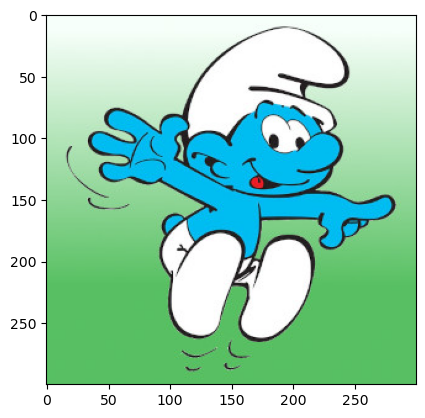
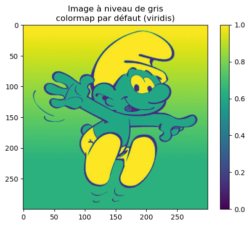
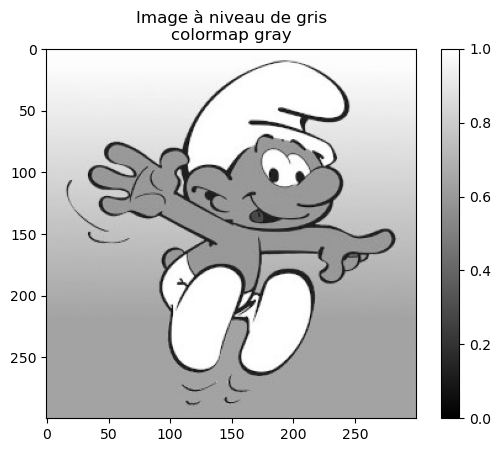

Afficher une image#
Création d’un notebook#
import skimage.io as io
import matplotlib.pyplot as plt
import skimage.color as clr
Affichage d’une image en couleur#
f = io.imread("_static/schtroumpf.jpg")
plt.imshow(f)
plt.show()

# Dimensions de l'image
print(f.shape)
(300, 300, 3)
# Type de données
print(f.dtype)
uint8
Les valeurs du pixel sont de type uint8 : ce sont des entiers non signés codés sur 8 bits (donc 1 octet). Cela permet de coder des valeurs entières entre 0 et 255. Comme il y a trois bandes (rouge, vert, bleu), le pixel est codé sur 3 octets.
print(f[150,150])
[ 0 189 241]
g = f.copy()
g[:, :, [0,1,2]] = f[:, :, [1,0,2]]
plt.imshow(g)
<matplotlib.image.AxesImage at 0x7e0e97e8c410>
Affichage d’une image à niveaux de gris#
g = clr.rgb2gray(f)
print(g.dtype)
float64
plt.imshow(g)
plt.colorbar()
plt.title('Image à niveau de gris\ncolormap par défaut (viridis)')
plt.show()
print(g.min())
print(g.max())

0.0
1.0
L’image ne semble pas être en niveaux de gris parce que la palette de couleurs utilisée n’est pas un camaïeu de gris mais un camaïeu de teintes jaunes, vertes et bleues. Cette palette est appelée viridis.
De plus, la conversion en niveau de gris produit une image dont les intensités des pixels sont entre 0 et 1. Le nombre de niveau de gris pouvant être supérieur 256 à cause de la conversion (\(x = 0.2125 \, r + 0.7154 \, g + 0.0721 \, b\)), l’image est maintenant codée en double précision sur 64 bits.
f[0,0]
array([246, 255, 250], dtype=uint8)
help(plt.imshow)
Help on function imshow in module matplotlib.pyplot:
imshow(
X: 'ArrayLike | PIL.Image.Image',
cmap: 'str | Colormap | None' = None,
norm: 'str | Normalize | None' = None,
*,
aspect: "Literal['equal', 'auto'] | float | None" = None,
interpolation: 'str | None' = None,
alpha: 'float | ArrayLike | None' = None,
vmin: 'float | None' = None,
vmax: 'float | None' = None,
colorizer: 'Colorizer | None' = None,
origin: "Literal['upper', 'lower'] | None" = None,
extent: 'tuple[float, float, float, float] | None' = None,
interpolation_stage: "Literal['data', 'rgba', 'auto'] | None" = None,
filternorm: 'bool' = True,
filterrad: 'float' = 4.0,
resample: 'bool | None' = None,
url: 'str | None' = None,
data=None,
**kwargs
) -> 'AxesImage'
Display data as an image, i.e., on a 2D regular raster.
The input may either be actual RGB(A) data, or 2D scalar data, which
will be rendered as a pseudocolor image. For displaying a grayscale
image, set up the colormapping using the parameters
``cmap='gray', vmin=0, vmax=255``.
The number of pixels used to render an image is set by the Axes size
and the figure *dpi*. This can lead to aliasing artifacts when
the image is resampled, because the displayed image size will usually
not match the size of *X* (see
:doc:`/gallery/images_contours_and_fields/image_antialiasing`).
The resampling can be controlled via the *interpolation* parameter
and/or :rc:`image.interpolation`.
Parameters
----------
X : array-like or PIL image
The image data. Supported array shapes are:
- (M, N): an image with scalar data. The values are mapped to
colors using normalization and a colormap. See parameters *norm*,
*cmap*, *vmin*, *vmax*.
- (M, N, 3): an image with RGB values (0-1 float or 0-255 int).
- (M, N, 4): an image with RGBA values (0-1 float or 0-255 int),
i.e. including transparency.
The first two dimensions (M, N) define the rows and columns of
the image.
Out-of-range RGB(A) values are clipped.
cmap : str or `~matplotlib.colors.Colormap`, default: :rc:`image.cmap`
The Colormap instance or registered colormap name used to map scalar data
to colors.
This parameter is ignored if *X* is RGB(A).
norm : str or `~matplotlib.colors.Normalize`, optional
The normalization method used to scale scalar data to the [0, 1] range
before mapping to colors using *cmap*. By default, a linear scaling is
used, mapping the lowest value to 0 and the highest to 1.
If given, this can be one of the following:
- An instance of `.Normalize` or one of its subclasses
(see :ref:`colormapnorms`).
- A scale name, i.e. one of "linear", "log", "symlog", "logit", etc. For a
list of available scales, call `matplotlib.scale.get_scale_names()`.
In that case, a suitable `.Normalize` subclass is dynamically generated
and instantiated.
This parameter is ignored if *X* is RGB(A).
vmin, vmax : float, optional
When using scalar data and no explicit *norm*, *vmin* and *vmax* define
the data range that the colormap covers. By default, the colormap covers
the complete value range of the supplied data. It is an error to use
*vmin*/*vmax* when a *norm* instance is given (but using a `str` *norm*
name together with *vmin*/*vmax* is acceptable).
This parameter is ignored if *X* is RGB(A).
colorizer : `~matplotlib.colorizer.Colorizer` or None, default: None
The Colorizer object used to map color to data. If None, a Colorizer
object is created from a *norm* and *cmap*.
This parameter is ignored if *X* is RGB(A).
aspect : {'equal', 'auto'} or float or None, default: None
The aspect ratio of the Axes. This parameter is particularly
relevant for images since it determines whether data pixels are
square.
This parameter is a shortcut for explicitly calling
`.Axes.set_aspect`. See there for further details.
- 'equal': Ensures an aspect ratio of 1. Pixels will be square
(unless pixel sizes are explicitly made non-square in data
coordinates using *extent*).
- 'auto': The Axes is kept fixed and the aspect is adjusted so
that the data fit in the Axes. In general, this will result in
non-square pixels.
Normally, None (the default) means to use :rc:`image.aspect`. However, if
the image uses a transform that does not contain the axes data transform,
then None means to not modify the axes aspect at all (in that case, directly
call `.Axes.set_aspect` if desired).
interpolation : str, default: :rc:`image.interpolation`
The interpolation method used.
Supported values are 'none', 'auto', 'nearest', 'bilinear',
'bicubic', 'spline16', 'spline36', 'hanning', 'hamming', 'hermite',
'kaiser', 'quadric', 'catrom', 'gaussian', 'bessel', 'mitchell',
'sinc', 'lanczos', 'blackman'.
The data *X* is resampled to the pixel size of the image on the
figure canvas, using the interpolation method to either up- or
downsample the data.
If *interpolation* is 'none', then for the ps, pdf, and svg
backends no down- or upsampling occurs, and the image data is
passed to the backend as a native image. Note that different ps,
pdf, and svg viewers may display these raw pixels differently. On
other backends, 'none' is the same as 'nearest'.
If *interpolation* is the default 'auto', then 'nearest'
interpolation is used if the image is upsampled by more than a
factor of three (i.e. the number of display pixels is at least
three times the size of the data array). If the upsampling rate is
smaller than 3, or the image is downsampled, then 'hanning'
interpolation is used to act as an anti-aliasing filter, unless the
image happens to be upsampled by exactly a factor of two or one.
See
:doc:`/gallery/images_contours_and_fields/interpolation_methods`
for an overview of the supported interpolation methods, and
:doc:`/gallery/images_contours_and_fields/image_antialiasing` for
a discussion of image antialiasing.
Some interpolation methods require an additional radius parameter,
which can be set by *filterrad*. Additionally, the antigrain image
resize filter is controlled by the parameter *filternorm*.
interpolation_stage : {'auto', 'data', 'rgba'}, default: 'auto'
Supported values:
- 'data': Interpolation is carried out on the data provided by the user
This is useful if interpolating between pixels during upsampling.
- 'rgba': The interpolation is carried out in RGBA-space after the
color-mapping has been applied. This is useful if downsampling and
combining pixels visually.
- 'auto': Select a suitable interpolation stage automatically. This uses
'rgba' when downsampling, or upsampling at a rate less than 3, and
'data' when upsampling at a higher rate.
See :doc:`/gallery/images_contours_and_fields/image_antialiasing` for
a discussion of image antialiasing.
alpha : float or array-like, optional
The alpha blending value, between 0 (transparent) and 1 (opaque).
If *alpha* is an array, the alpha blending values are applied pixel
by pixel, and *alpha* must have the same shape as *X*.
origin : {'upper', 'lower'}, default: :rc:`image.origin`
Place the [0, 0] index of the array in the upper left or lower
left corner of the Axes. The convention (the default) 'upper' is
typically used for matrices and images.
Note that the vertical axis points upward for 'lower'
but downward for 'upper'.
See the :ref:`imshow_extent` tutorial for
examples and a more detailed description.
extent : floats (left, right, bottom, top), optional
The bounding box in data coordinates that the image will fill.
These values may be unitful and match the units of the Axes.
The image is stretched individually along x and y to fill the box.
The default extent is determined by the following conditions.
Pixels have unit size in data coordinates. Their centers are on
integer coordinates, and their center coordinates range from 0 to
columns-1 horizontally and from 0 to rows-1 vertically.
Note that the direction of the vertical axis and thus the default
values for top and bottom depend on *origin*:
- For ``origin == 'upper'`` the default is
``(-0.5, numcols-0.5, numrows-0.5, -0.5)``.
- For ``origin == 'lower'`` the default is
``(-0.5, numcols-0.5, -0.5, numrows-0.5)``.
See the :ref:`imshow_extent` tutorial for
examples and a more detailed description.
filternorm : bool, default: True
A parameter for the antigrain image resize filter (see the
antigrain documentation). If *filternorm* is set, the filter
normalizes integer values and corrects the rounding errors. It
doesn't do anything with the source floating point values, it
corrects only integers according to the rule of 1.0 which means
that any sum of pixel weights must be equal to 1.0. So, the
filter function must produce a graph of the proper shape.
filterrad : float > 0, default: 4.0
The filter radius for filters that have a radius parameter, i.e.
when interpolation is one of: 'sinc', 'lanczos' or 'blackman'.
resample : bool, default: :rc:`image.resample`
When *True*, use a full resampling method. When *False*, only
resample when the output image is larger than the input image.
url : str, optional
Set the url of the created `.AxesImage`. See `.Artist.set_url`.
Returns
-------
`~matplotlib.image.AxesImage`
Other Parameters
----------------
data : indexable object, optional
If given, all parameters also accept a string ``s``, which is
interpreted as ``data[s]`` if ``s`` is a key in ``data``.
**kwargs : `~matplotlib.artist.Artist` properties
These parameters are passed on to the constructor of the
`.AxesImage` artist.
See Also
--------
matshow : Plot a matrix or an array as an image.
Notes
-----
.. note::
This is the :ref:`pyplot wrapper <pyplot_interface>` for `.axes.Axes.imshow`.
Unless *extent* is used, pixel centers will be located at integer
coordinates. In other words: the origin will coincide with the center
of pixel (0, 0).
There are two common representations for RGB images with an alpha
channel:
- Straight (unassociated) alpha: R, G, and B channels represent the
color of the pixel, disregarding its opacity.
- Premultiplied (associated) alpha: R, G, and B channels represent
the color of the pixel, adjusted for its opacity by multiplication.
`~matplotlib.pyplot.imshow` expects RGB images adopting the straight
(unassociated) alpha representation.
plt.imshow(g, "gray")
plt.colorbar()
plt.title('Image à niveau de gris\ncolormap gray')
plt.show()

plt.plot(g[:,260])
[<matplotlib.lines.Line2D at 0x7e0e97e56710>]